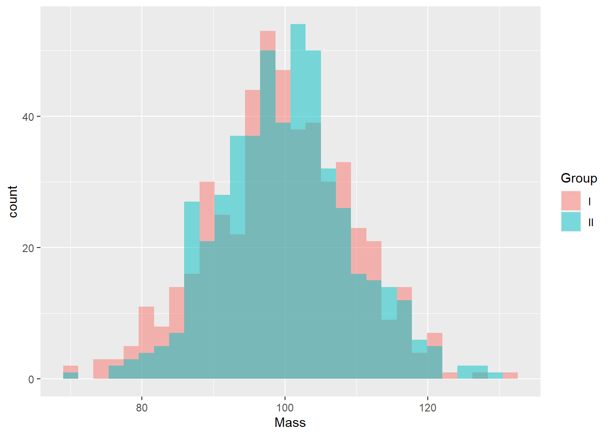
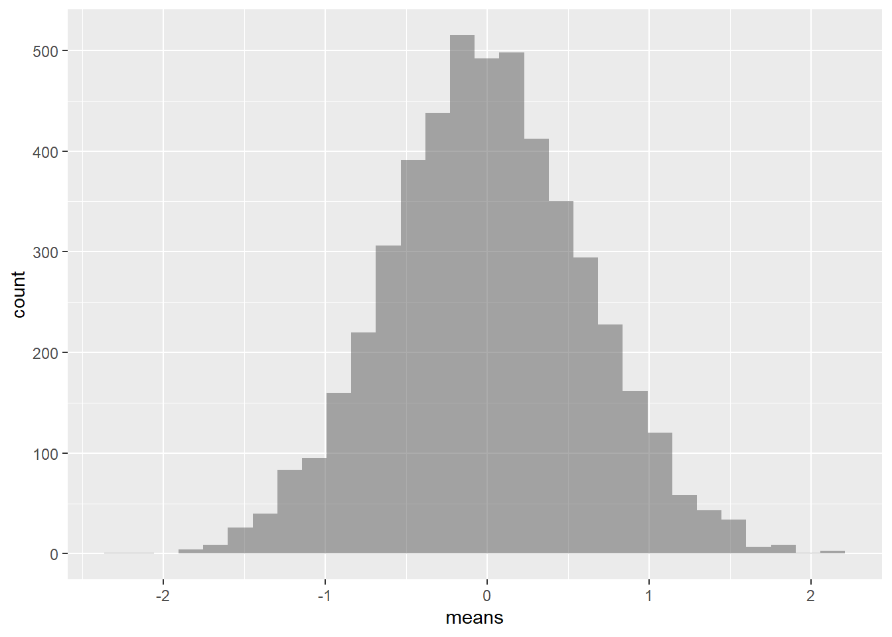

Note: This article is based on a youtube video tutorial made by Dr Juan Klopper. In the tutorial Juan illustrate how one can estimate a p-value for the difference in means between two groups using Julia. Obvious and notable differences in this post includes code written in R.
TODO: Added math equations, additional information and update aesthetics.
library(dplyr)
library(ggplot2)Data set with \(N\) members, containing a numeric variable.
N <- 1000The numeric variable (mass) are distributed normally with population mean (\(\mu\)) and standard deviation (\(\sigma\))
mass.mean <- 100
mass.sd <- 10Generate Data Set
set.seed(12)
population <- data.frame(Mass = rnorm(N, mass.mean, mass.sd))Note: configure pseudo-random number generator for reproducibility using seed(x)
Extract numeric variable from population as vector
mass <- population[['Mass']]Define groups
group <- c('I','II')Randomly assign group identifier to each population member
group_probability <- c(0.479,0.521)
population[['Group']] <- replicate(N,sample(group,size = 1, prob = group_probability))Note: group probabilities are used to mimic the number of observations included in each sample set, as observered in tutorial
Extract Sample Sets
group.I <- population |> filter(Group == 'I')
group.II <- population |> filter(Group == 'II')Extract numerical variable from sample sets as vector
mass.I <- group.I[['Mass']]
mass.II <- group.II[['Mass']]Get number observations (\(n\)) in each sample set
n.I <- length(mass.I)\(n_I = 504\)
n.II <- length(mass.II)\(n_{II} = 496\)
Get summary stats of each sample set
summary(mass.I)## Min. 1st Qu. Median Mean 3rd Qu. Max.
## 69.54 93.08 99.43 99.43 106.07 131.07summary(mass.II)## Min. 1st Qu. Median Mean 3rd Qu. Max.
## 70.14 93.94 99.80 100.05 105.29 129.38Plot histogram of sample data sets overlaid on top of each other
ggplot(population, aes(
x=Mass,
fill=Group)) +
geom_histogram(
position = "identity",
alpha=0.5,
bins = 30)
Calculate and display difference between sample means
delta_means <- abs(mean(mass.I) - mean(mass.II))\(\Delta\bar{X} = 0.623\)
Use random pairwise samples extracted from the population data set to generate a spectrum of possible differences between sample means
means <- c()
resamples <- 5000
for (i in 1:resamples ) {
mass.shuffled <- sample(mass)
group.I.new <- mass.shuffled[1:n.I]
group.II.new <- mass.shuffled[(n.I + 1):N]
delta_means.new = mean(group.I.new) - mean(group.II.new)
means <- means |> append(delta_means.new)
}Plot a histogram of resampled differences between sample means
ggplot(mapping = aes(means)) +
geom_histogram(
position = "identity",
alpha=0.5,
bins = 30)
Manually calculate p-value of the difference between the two sample means
p_value.manual <- (length(means[means < -delta_means]) + length(means[means > delta_means])) / resamplesp-value \(= 0.304\)
Use t.test() function to calculate p-value of the difference between the two sample means
p_value.package <- t.test(mass.I, mass.II, alternative = "two.sided", var.equal = FALSE)[['p.value']]p-value \(= 0.304\)